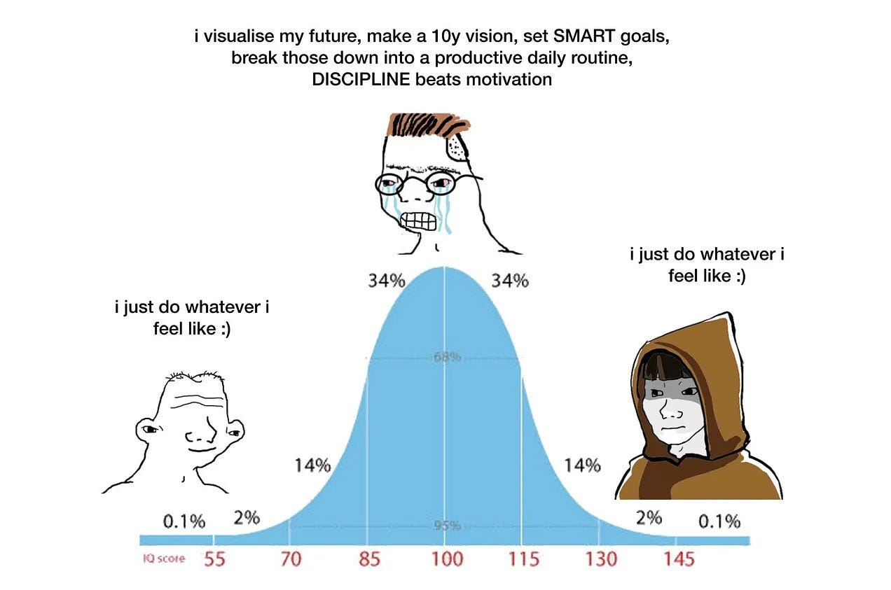

Why Mixed Methods?| Many reasons: Triangulate quantitative with qualitative data – confirm (or deny) hypotheses – address some issues of bias Interviews / focus group discussions can enrich survey results, adding depth to what are otherwise numbers Provide causal explanations: why do numbers appear the way they do? Surveys can substantiate interviews, which often involve small sample sizes Appeal to sceptics: some people distrust numbers; some people distrust words; why not both? |
Offer more contrast: sometimes survey questions disguise as much as
they reveal “20% of students use AI” – yes, but 10% might be high achievers; 10% might be low achievers. Interviews can unpack summarized survey data |
| Cost Time Complexity Can dilute focus Can be hard to integrate both quant and qual into a single journal article - can make the analysis look thin or weak |
| Typical… Survey first Interviews next In parallel… Survey & interviews |
Less common – Qual as scoping… Interviews first Surveys next Iterated… Survey then interviews then surveys then interviews… |
| Think also about other methods that can be tr |
| Exploratory Analysis with Quantitative Data |
| Let’s generate some sample interview data… |